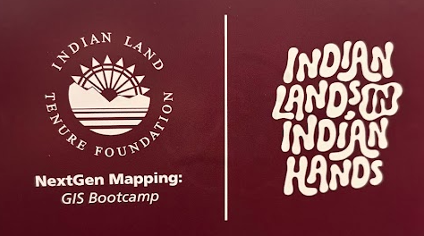

Journal of Forestry publication
First-author research connected to oak regeneration in the southern Appalachian mountains and forestry field experience with the USDA Forest Service.
View via USFS TreesearchA dedicated page for public-facing work that shows my range across stewardship, applied research, technical communication, Tribal natural resources, GIS, and conservation partnerships.
First-author research connected to oak regeneration in the southern Appalachian mountains and forestry field experience with the USDA Forest Service.
View via USFS Treesearch
Applied GIS education that connects mapping, place, youth development, natural resource skills, and future stewardship capacity.
View GIS projects
Public-facing project and informational resources connected to Tribal land stewardship, conservation finance, and natural resource decision support.
Visit indiancarbon.orgEach featured item shows a different part of a broad conservation skill set: field research, applied GIS, public communication, stewardship finance, Tribal natural resources, youth education, and the ability to explain complex work clearly for different audiences.